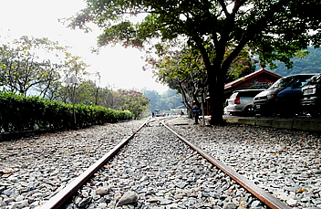

南投最美麗的車站
[阿傑]車程老街輕鬆遊

你來過南投最美麗的車站－南投車埕老街嗎?位在南投信義鄉的車埕，這裡曾經是南投木材的主要集散地，隨著時代變遷及山林資源消耗殆盡，政府開始禁止伐木，車埕因此逐漸沒落，近年來開始發展觀光，來到這裡有著最純樸的日式風景，一踏進車埕老街就先看到這可愛的小衛兵，來到遊客中心裡頭介紹了許多有關於車埕老街的一切，以及放上許多南投一日遊二日遊的行程DM等等，周圍琳瑯滿目的攤販可深受大人小孩們的喜歡呢，絕大多販賣為水果農產品居多，而被遺忘的山中小鎮，現今已成為熱門的南投旅遊景點之一，放眼望去綠油油的草地，還有美麗的楓葉，成了小朋友玩耍及大人們拍照的亮點...